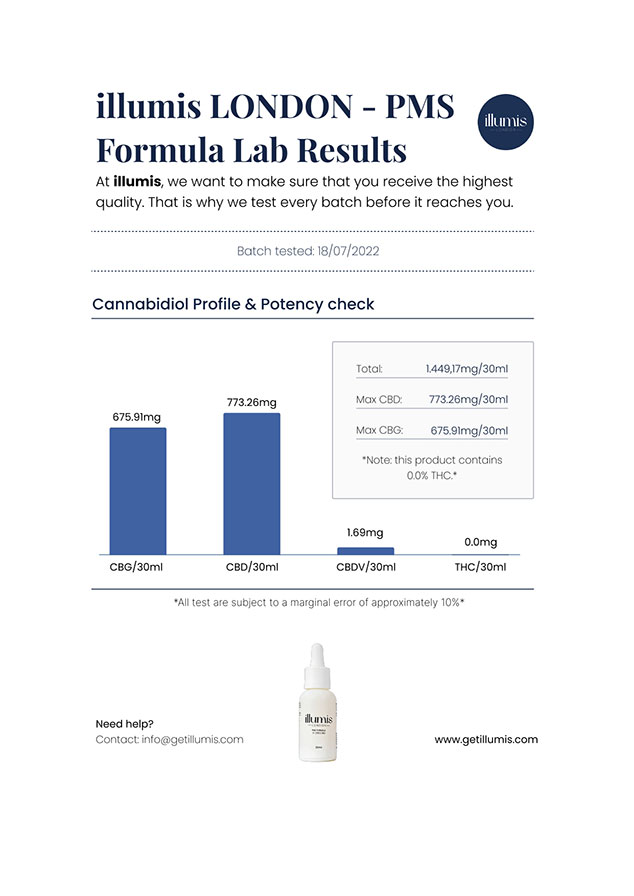

Insights on Severe Premenstrual Syndrome (PMS) - PMDD: Navigating and Preventing Harsh Symptoms
Advertisement Promotion
Most women are familiar with PMS or premenstrual syndrome. However, not many understand the severity of not addressing its symptoms promptly. In this article, we'll delve into the recent findings on premenstrual dysphoric disorder (PMDD) and its implications on personal and professional life. This information is brought to you by Dr. Leona Williams, a seasoned obstetrician-gynaecologist with over two decades of expertise.
PMS vs. PMDD: The Difference
While PMS often entails mood swings, abdominal pain, and communication difficulties with loved ones, PMDD amplifies these symptoms. Diagnosis is typically based on the presence of 5 or more of the following symptoms:
- Anxiety, sadness, and stress
- Uncontrollable anger and depression
- Suicidal tendencies
- Panic attacks and bouts of uncontrolled crying
- Severe mood fluctuations
- Diminished interest in daily tasks
- Chronic fatigue and feeling of lost control
- Sleep disturbances and attention deficits
- Gastrointestinal issues and excessive eating
- Persistent headaches and joint pain
Why does PMDD occur?
The exact cause remains elusive. Yet, hormonal fluctuations are commonly believed to be linked. Those sensitive to serotonin level shifts might be more prone to PMDD. Genetic predispositions to certain illnesses, past traumatic experiences, and emotional abuses also play a role. Therefore, prioritizing health is essential to prevent the transition from PMS to PMDD.
A diagram of symptom expression according to a study in the medical journal Lancet.
PMDD's Treatment Options
According to Dr. Leona Williams, treatment can combine medication and lifestyle alterations. Although drugs, including psychotropic medications, hormone therapy, and birth control pills, are available, they can have considerable side effects, including potential suicidal tendencies. Balancing potential benefits and risks is crucial. Non-pharmaceutical measures encompass exercise, dietary modifications, and yoga, serving more as preventative means.
It is important to remember that all drugs have their side effects and the decision to start treatment should be made out waying both the potential benefits and risks associated with them.
Impacts of PMS and PMDD at Work
Physical symptoms, such as fatigue and headaches, decrease concentration and work efficiency. Emotional upheavals, like irritability and mood changes, can strain professional relationships. PMDD further compounds the issue by eroding self-confidence and causing absenteeism. A YouGov survey revealed that 35% believe PMS hinders work focus, with many needing breaks due to pain.
Relationship Strains due to PMDD
Based on collaborative research between psychologists and medical experts, including insights from Dr. Williams, PMDD can severely strain familial and romantic relationships. Symptoms can lead to aggression, decreased sexual activity, and communication barriers.
Fitness Complications
PMDD can impede regular exercise routines, leading to potential physical changes and increased injury risks.
Are painkillers the answer?
Unfortunately, not always. While many resort to painkillers, they're not a long-term solution. Over-reliance can disrupt hormonal balance and fail to address underlying issues such as stress and anxiety. In some cases, they may even exacerbate the issue.
Antidepressants and painkillers can cause drowsiness, dizziness, changes in appetite and weight, decreased libido, dry mouth, and other discomfort. These are all side-effects that you can find on the label of these over-the-counter drugs.
Managing PMS Symptoms
- Prioritize sleep and rest.
- Opt for a balanced diet rich in essential nutrients.
- Engage in regular exercise.
- Employ relaxation techniques like meditation.
Dangers of delayed treatment and how to avoid it
The BMC Women's Health 2023 study, states the following:
Many female patients felt that they had to prove to doctors how serious their symptoms were in order to be taken seriously. Some patients used previous psychiatric hospitalisations as proof or support for the seriousness of their condition. Others were hesitant to tell their doctor about their suicidal thoughts because they were afraid of hospitalisation or not being taken seriously. Patients shared that they had to go through many obstacles to get the treatment they wanted.
According to participants, health care providers thought it was acceptable or normal for women to experience some degree of menstrual pain and suffering.
In addition, female participants reported concerns about doctors' practice of to prescribe first-line medications because doctors prescribed them without follow-up. If there was follow-up, it was most often after 9 weeks, which participants said was sufficient time for them to feel suicidal intentions after the negative side effects of the medication.
Thus, you may face either queues at hospitals or misunderstanding of doctors. But what to do? You need your health right now. If you don't take care of your health, it will increase your risk of developing cardiovascular disease, diabetes, high blood pressure and other chronic conditions. Uncontrolled stress can lead to depression, anxiety and other mental disorders. Without the right remedy, the immune system will deteriorate, making the body more susceptible to infections and diseases. Overall life expectancy is also shortened due to regular stress!
Women who are chronically stressed also have significantly lower levels of the hormone Klotho. Klotho is an important hormone that performs many different functions in the body. Not only does it improve cognitive abilities, but it also regulates aging. This discovery suggests a powerful link between stress and longevity. A study conducted at the University of California, San Francisco found many interesting results regarding the relationship between stress, depression and klotho.
A senior author named Dena Dubal, MD, PHD, and her team worked together to get some new evidence regarding klotho. She found that, essentially, the more klotho, the better - and some people are born with a genetic variant that results in more klotho in the blood. These people tended to live longer, have lower rates of age-related diseases, a larger prefrontal cortex area and better cognitive function. Chronic stress in general has been shown to lead to health problems during aging. These problems include Alzheimer's disease in addition to cardiovascular disease.
An Innovative Solution: Illumis
Introducing illumis, a UK-produced natural solution offering relief from PMS and PMDD symptoms. Validated through independent testing, Illumis is both safe and effective without the side effects commonly associated with synthetic drugs.
Science is constantly evolving. Numerous studies have led to the development of Illumis, a solution based on natural ingredients. It is produced in the UK and works thanks to powerful ingredients that do not contain hormones. It improves women's health, eases the cycle and relieves all symptoms of PMS and PMDD.
This is a unique product that has no worthy analogues. It improves psycho-emotional state, relieves pain, improves sleep, and also promotes bone strengthening, which is very important for women over 30, when the first problems appear, which can quickly lead to serious consequences. And this effect is achieved without potent synthetic substances and hormones. The safety and efficacy of Illumis have been confirmed by tests carried out in independent laboratories, where the product has received certificates of analysis (COA).
Is the cost a concern?
It's understandable to be mindful of expenses. During PMS, many women find themselves vulnerable and often resort to various remedies like antidepressants, painkillers, or even indulgences like chocolate to alleviate stress. Coupled with potential income losses due to reduced work productivity, these costs can accumulate over time, often surpassing the price of a single effective solution. Furthermore, consistently relying on artificial drugs can disrupt the body's delicate natural balance, potentially causing more harm than good. In contrast, Illumis offers a natural alternative.
Being female should not equate to enduring pain or missing out on life's pleasures. Don't let PMS stand in the way of your aspirations, joys, and ambitions. Continue to push boundaries, overcome obstacles, and remember: you possess the strength to surmount any challenge.
A Special Offer from Our Editors
For those battling PMS and PMDD, we're providing a limited offer: a significant discount on Illumis. The first 1,000 women can purchase at a 55% discount.

After going through the article, it dawned on me that I might be suffering from PMDD. It's something I've battled for a significant amount of time, to the point that I nearly resigned from my job. I was expected to submit a report by Wednesday, but due to my symptoms, I could only manage by Friday, leading to a reprimand. The persistent lower abdominal pain, coupled with anxiety and dark thoughts, was almost insurmountable. However, after giving Illumis a shot, I've seen a transformation. My symptoms have substantially diminished.
My partner and I faced considerable strain in our relationship. For an extended period, I was excessively irritable. An incident that stands out is when he neglected to wash the dishes, and I reacted intensely, even resorting to a physical confrontation. This drove a wedge between us for a while, and deep down, I acknowledged my overreaction. My attempt with antidepressants led to a series of side effects without addressing the core issue. Thankfully, with Illumis, I've found harmony in my relationship and have gained better control over my anger. It truly is an unparalleled solution.
I initially had my reservations about Illumis. Being someone who prioritizes fitness, the fatigue caused by painkillers hindered my regimen. To stay fit, it's crucial to maintain some level of physical activity, even during PMS. Upon trying illumis, I was convinced of its efficacy so much so that I stocked up for future use.
My productivity at work suffered due to incessant lower abdominal pain and bouts of dizziness, escalating my anxiety levels. However, since incorporating Illumis into my routine, there's been a noticeable improvement. The investment in this product is truly justified by the relief it offers.
A close friend introduced me to Illumis after I shared my struggles with anxiety. My mental state had deteriorated to the point that I began isolating myself, distancing from several acquaintances. Gradually, with the aid of this natural remedy, I've experienced a positive shift in my well-being.
At 25, managing a chronic condition means being extra cautious, especially when medications can exacerbate my symptoms during my cycle. I've experimented with numerous treatments, but Illumis stands out. It has significantly improved my ability to study and work by alleviating lower abdominal pain and unpredictable mood fluctuations. Now, I finally have peace of mind regarding my health.
Dunno why I read this post, but now I want to comment. My girlfriend just goes wild on her period, threatening to break up with me. Will Illumis help her? Where can I order it from?
Girls who are not fully exposed to PMS will never understand all the challenges this condition brings. When your whole body hurts and cramps, your mood jumps at the speed of light, you can’t focus on anything. This happens to me almost every month :(
The best remedy during PMS is yelling at your husband :))) Just kidding. I’ll look into Illumis myself, I’m having a hard time these days, too.
I tried Illumis and it really helps. I had headaches, apathy, and fatigue during my periods. But all these problems disappear as soon as you start taking these drops. Most importantly, they are plant-based, which is not quite common on the market nowadays.
Thanks for bringing this up. I had a fight with my hubby yesterday.. I tried to explain to him that I don’t get irritated during periods intentionally, that’s all about physiology! But he wouldn’t believe it! I even showed him your posting. Thanks for the recommendation, I’ve already ordered Illumis.
My friend just told me about this solution, what a coincidence)))
Hello everyone! In fact, if you keep ignoring PMS symptoms for a long time, a serious hormonal failure or genital problems can occur. For example, my libido dropped a lot, they searched for the cause, and it turned out to be PMS. Now I take Illumis regularly, I feel much better and my sex drive is coming back.
Oddly enough, exercise helps me during PMS. I spit out all the anger. Although many people simply do not want to move during this period at all. We are all different.
Thank God I do not have severe PMS symptoms, but I know from my friends how hard it is. Not everyone gets it, unfortunately :(
I’m just PMSing right now! I’m going crazy and I can’t do anything about it: ((( I got into a fight with a coworker. Maybe it’s time to order these drops.
Same here! My stomach hurts, my head is splitting. I don’t even want to get out of bed on days like this. Why didn’t I know about Illumis before?